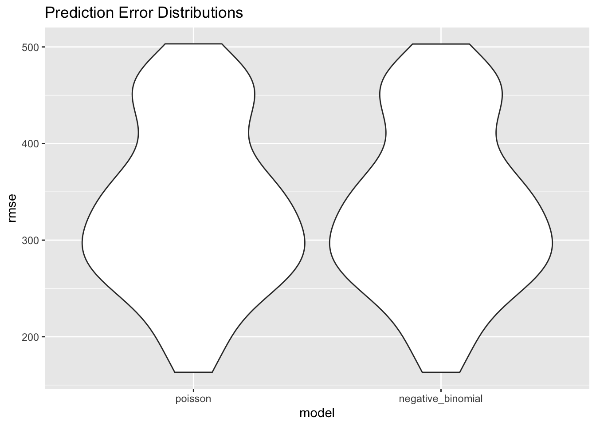

Hypothesis
Has the US seen more natural disasters over time? Our team hypothesizes that the continental United States is seeing an increase in count of natural disasters over the years as average temperatures rise. We will consider including average temperature, total precipitation, and year in our model.
Modeling: Poisson vs Negative Binomial Regression
After inspecting the summary visualizations and plotting the distribution of the data, we decided to run a Poisson regression model to formally test the hypothesis that the count of natural disasters by US region is increasing between 1953-2018. The distribution illustrating the number of disasters per year indicated that our data was highly right skewed. Poisson modeling is appropriate because (1) we are modeling count data and (2) our data is right skewed with positive values only. Motivated by our exploratory visualizations, we also decided it was necessary to control for mean temperature and precipitation.
There are two main ways to model this data:
Poisson Regression: assumes mean = variance
Negative Binomial Regression: accounts for overdispersion where variance > mean
Variables of Interest
First, let’s consider our variables of interest.
Count of Disasters: The number of disasters by year and region.
Year: Ranges from 1953 to 2018.
Region: The US regions categorized by Midwest (reference category), Northeast, Southwest, and West. These regions were defined by the World Atlas definitions.
Average Temperture: The average temperature in degrees Fahrenheit by region.
Precipitation: The total amount of rainfall in inches by region.
Cross Validation
After testing various models with just Poisson, we fit a final model that takes the form:
\[ log(\lambda Count \ of \ Disasters) = \beta_0 + \beta_1 Year + \beta_2 Region + \beta_3 Average \ temp + \beta_4 Precipitation \]
Now we can use cross validation to test whether Poisson or Negative Binomial Regression fits our data best.

Reviewing the distributions of residual mean squared errors above, it is hard to distinguish between our two models. Instead, we can compare AICs and use the model with the lowest AIC.
Poisson Model
Negative Binomial Model
Using AIC as a measure for Goodness of Fit, we choose the Poisson Model.
poisson_output = poisson_model %>%
broom::tidy() %>%
dplyr::select(term, estimate, p.value) %>%
mutate(exp(estimate))
poisson_output %>%
knitr::kable(digits = 3)
| (Intercept) |
-61.791 |
0.000 |
0.000 |
| year |
0.033 |
0.000 |
1.034 |
| regionnortheast |
-1.392 |
0.000 |
0.248 |
| regionsoutheast |
-0.621 |
0.000 |
0.538 |
| regionwest |
-0.776 |
0.000 |
0.460 |
| ave_temp |
-0.008 |
0.014 |
0.992 |
| sum_precip |
0.002 |
0.000 |
1.002 |
Main Findings
Fitting the Poisson regression model, the results were significant at the 5% level of significance. After adjusting for region in the US, average temperature, and precipitation, we found that for every increase in year, there was a 1.034 increase of natural disasters by US region. Similarly, we found that as compared to the Midwest region of the United States, the Northeast, Southeast, and West regions had seen increases in the number of natural disasters during our specified time period. This supported our hypothesis that the count of natural disasters increased from 1953 to 2018.